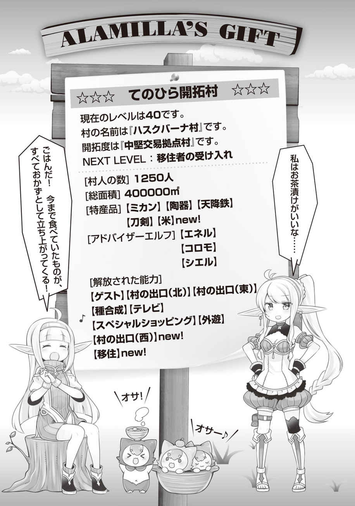

エピローグ
私が連れてこられたのは、自然豊かな場所だった。
能力を使った青年はアラミラの使徒なのだろう。長距離移動が可能な能力のようだ。
私が監禁された理由は……今でもよくわからない。だが、今こうして監視を付けられながらも外に出されたのは、何か奴らの方向性のようなものが変わったからなのだろう。
それにしても、驚くほど原始的な生活をしている場所だ。
どうやら、殺される心配はなさそうだが、この場所では、あの戦がどうなったのかすら、わからない。窓の外の風景は平和そのもの。あるいは、私が閉じ込められている間に戦は終わったのだろうか？ ……いや、そんな都合の良い話はありえないだろうか。
「起きてますか？ 入りますよ」
控えめなノックの後、あの青年が入ってきた。確かカイと呼ばれていた。
「起きているよ。今日はあの服を着ていないんだな」
「神官服ですか？ ああ、あれは潜入する為に変装で着ていただけですからね」
変装？ ということは、彼は味方ということなのか？
「君は何者だ？ どうして私を連れだしてくれたんだ？ 私の家族は無事なのか……？」
私の質問に、カイ青年は戸惑った顔を見せた。私はそれを見て察してしまった。
十年もの期間、監禁されたのだ。家族だって無事ではないだろう。
もしかしたら、無事だとしても妻は別の男を見つけて新しい人生を歩んでいるに違いない。私は人生を壊されてしまった……。
「あの、あなたの名前、もう一度ちゃんと聞いていいですか？」
「ああ。そういえば、しっかりとした自己紹介はしていなかったな。私は、アラミラの使途の、アーサー・ウィリアムズ・ファーレー。能力は『彩の神々』」
「……え？」
「能力名だけじゃわからないか。ちょっと……いや、かなりかな……変わった力だから。私の力は、アラミラの使途と同じように、私自身が考えた神々の使徒を生み出す力なのだよ。といっても実際に私が考えた神々の使徒って、まだ一度も見たことがないんだから……アラミラも変な能力を授けたものだよ。誰が恩寵を授かるかまで偶然なんだから」
「考えた……神々……ですか？」
「ああ、十三の神を考えたんだが、君は見たことがある？ 使徒とは区別する意味で『祝福者』と名付けたんだけど」
カイ青年は、私の話を聞いて、あからさまに驚いた顔をして、小さくこう呟いた。
「主神ファーレーと……彼の眷属十三の神々……」と。
